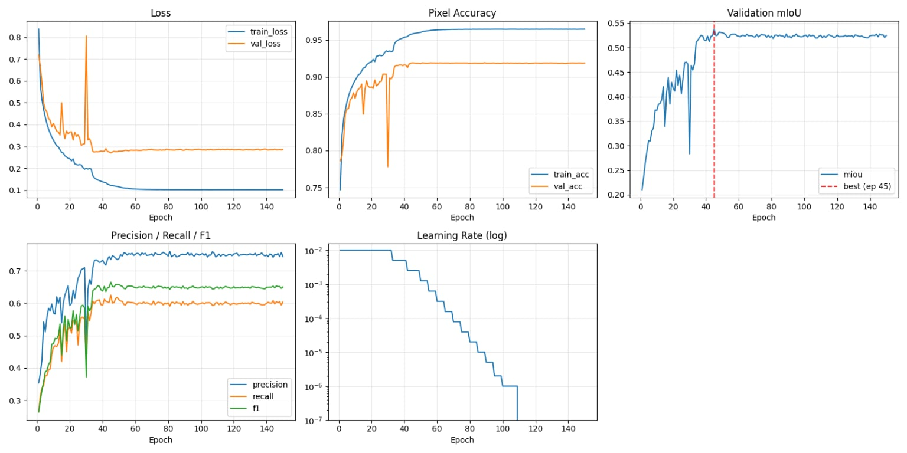

Total: 5000 Images Fine AnnotationTrain set: 2975 ImagesValidation set: 500 ImagesTest set: 1525 ImagesData preprocessing and augmentation pipeline for training with PyTorch:
| Configuration | Train Set | Validation / Test Set |
|---|---|---|
| Input Image size | 1024 × 512 | 1024 × 512 |
| Shuffle | Shuffle = True |
Shuffle = False |
| Augmentation Pipeline |
|
|
DeepLabV3+ architecture utilizing a MobileNetV3-Large encoder and ASPP (Atrous Spatial Pyramid Pooling).
PyTorch, GPU NVIDIA RTX 3500 AdaMobileNet_V3_Large and DeepLabV3+AdamW (Weight Decay: 1e-4)ReduceLROnPlateau (factor=0.5, patience=5). The learning rates drop to 0.000050 (Backbone) and 0.000500 (Head) at Epoch 18. The rates drop again to 0.000025 (Backbone) and 0.000250 (Head) at Epoch 27.SegFormer-B0 architecture utilizing a MiT-B0 (Mix Transformer) encoder and All-MLP Decoder.
PyTorch, GPU NVIDIA RTX 3500 AdaMiT-B0 + SegFormer-B0AdamW (Weight Decay: 0.01)ReduceLROnPlateau (mode="max", factor=0.5, patience=4). For SegFormer-B0, initial learning rates are 6e-5 (Backbone) and 6e-4 (Head). The rates drop to 3e-5 / 3e-4 at Epoch 27, and 1.5e-5 / 1.5e-4 at Epoch 44.The test results are based on the model trained with the highest validation accuracy (Best Model saved at Epoch 21 for DeepLabV3+ and Epoch 45 for SegFormer-B0).
Summary table of experimental data:
| Architecture | Epoch | Learning Rate | Validation Loss | Pixel Accuracy | mIoU | Precision | Recall | F1-score |
|---|---|---|---|---|---|---|---|---|
| DeepLabV3+ (MobileNetV3-Large) | 30 | Backbone LR: 1e-4; Head LR: 1e-3 | 0.2680 | 0.9423 | 0.6637 | 0.8258 | 0.7488 | 0.7811 |
| SegFormer-B0 (MiT-B0) | 50 | Backbone LR: 6e-5; Head LR: 6e-4 | 0.1959 | 0.9461 | 0.6885 | 0.8429 | 0.7723 | 0.8037 |
Motivation. Two-branch networks (TBNs) such as BiSeNet and DDRNet achieve a favorable speed–accuracy trade-off by combining a high-resolution detail branch with a deep, low-resolution context branch. However, these branches are typically fused by direct summation or concatenation. Xu et al. argue that this naive fusion allows low-frequency contextual information to overwhelm high-frequency details. As a result, object boundaries are eroded and small objects are absorbed by adjacent large regions. The authors refer to this effect as overshoot.
Core idea. The paper draws an analogy between a TBN and a Proportional–Integral (PI) controller. The detail branch responds to local, instantaneous information and therefore behaves like the proportional (P) term. The context branch aggregates information over a wide neighborhood and behaves like a low-pass filter, i.e. the integral (I) term. In control theory, a PI controller is prone to overshoot, which is mitigated by adding a derivative (D) term that is sensitive to rapid signal changes. By analogy, the authors introduce a derivative branch that focuses on high-frequency semantic variation. Since semantic labels change only at object boundaries, this branch is trained as a boundary detector.
Architecture. PIDNet comprises three complementary branches built on cascaded residual blocks:
| Branch | Role | Depth |
|---|---|---|
| P (Proportional) | Preserves fine spatial detail at high resolution | Moderate |
| I (Integral) | Aggregates local and global context, models long-range dependencies | Deep |
| D (Derivative) | Extracts high-frequency features to predict boundaries | Shallow |
Datasets and metrics. The paper evaluates on Cityscapes (2,975/500/1,525 train/val/test images at 2048 × 1024, 19 classes, fine annotations only), CamVid (367/101/233 images, 11 classes) and PASCAL Context (4,998/5,105 train/val images; 59 and 60 classes). Accuracy is measured by mean Intersection-over-Union (mIoU), and efficiency by frames per second (FPS) on a single RTX 3090 with batch size 1.
| Dataset | Train / Val / Test | Resolution | Classes | Role in the paper |
|---|---|---|---|---|
| Cityscapes | 2,975 / 500 / 1,525 | 2048 × 1024 | 19 (fine annotations only) | Main benchmark for speed–accuracy comparison and all ablations |
| CamVid | 367 / 101 / 233 | 960 × 720 | 11 (of 32) | Second real-time benchmark; models are fine-tuned from Cityscapes-pretrained weights |
| PASCAL Context | 4,998 / 5,105 | 520 × 520 crop | 59 and 60 | Generalization test against heavier, high-accuracy networks |
Limitations acknowledged by the authors. Because the boundary branch and the Bag module depend on predicted boundaries, performance benefits from precise boundary annotations, which are costly to produce.
Limitations identified in this work.
The best validation mIoU is 53.75% (epoch 45), considerably below the 78.8% reported for PIDNet-S on the Cityscapes validation set. The training curves indicate that the model did not simply lack training time. Validation mIoU peaked at epoch 45 and then fluctuated around 0.525 for the remaining 105 epochs, while the training loss saturated at approximately 0.102. This plateau coincides with the step-wise learning-rate decay: the LR dropped below 1e-5 by epoch 85 and reached zero after epoch 100, so the final 50 epochs contributed almost no learning. The gap between training and validation pixel accuracy (96.5% vs. 91.9%) further suggests limited generalization. We therefore attribute the difference from the paper primarily to (1) the aggressive LR decay in place of the poly schedule, (ii) the small batch size (4 vs. 12), which also makes batch-normalization statistics noisy, and (iii) the reduced crop size (512 × 1024 vs. 1024 × 1024), which limits context and the resolution of small objects. Two validation spikes at epochs 15 and 30 (val loss 0.31 → 0.81 at epoch 30), both occurring at LR=0.01, further indicate unstable optimization at the initial learning rate with a small batch.
Reproduction outcome
We implemented and trained PIDNet on Cityscapes (19 classes, 2,975 training and 500 validation images) using the same optimizer family and key hyperparameters as the original paper (SGD, initial learning rate 0.01, weight decay 5e-4). The best validation result was obtained at epoch 45, with a mIoU of 53.75%, pixel accuracy of 91.90%, precision of 0.7349, recall of 0.6251 and F1-score of 0.6649. This is roughly 25 points below the 78.8% mIoU reported for PIDNet-S in the paper, and also below both of our baselines (MobileNetV3 + DeepLabV3+ and SegFormer-B0 + MiT-B0). We therefore did not reproduce the accuracy reported in the paper, and our results should not be read as evidence against the method itself.
